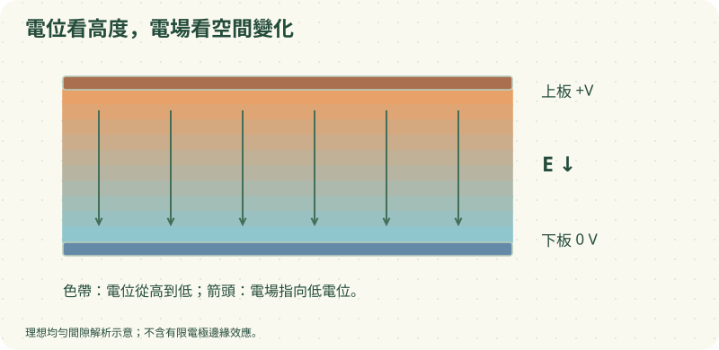

電磁場分析
從電位與電場出發，完成理想平行板靜電案例，再看邊界與尖角問題。
2024 R23 篇筆記
操作環境：Electronics Desktop → Maxwell 2D
先理解觀念 → 跟做案例 → 檢查與排錯。操作內容為文件查證，尚待實機驗證；圖解與互動為解析或概念示意。
先玩再懂 / ANALYTIC PLAYGROUND
解析／概念電壓與間距，怎麼改變電場？

場強—kV/m
電位差—V
間距—mm
理想平行板解析式；介質均勻、無空間電荷，不含邊緣效應。色帶依當次電位差正規化，箭頭代表方向，線數與箭頭長度不是場強。 查看依據 ↗